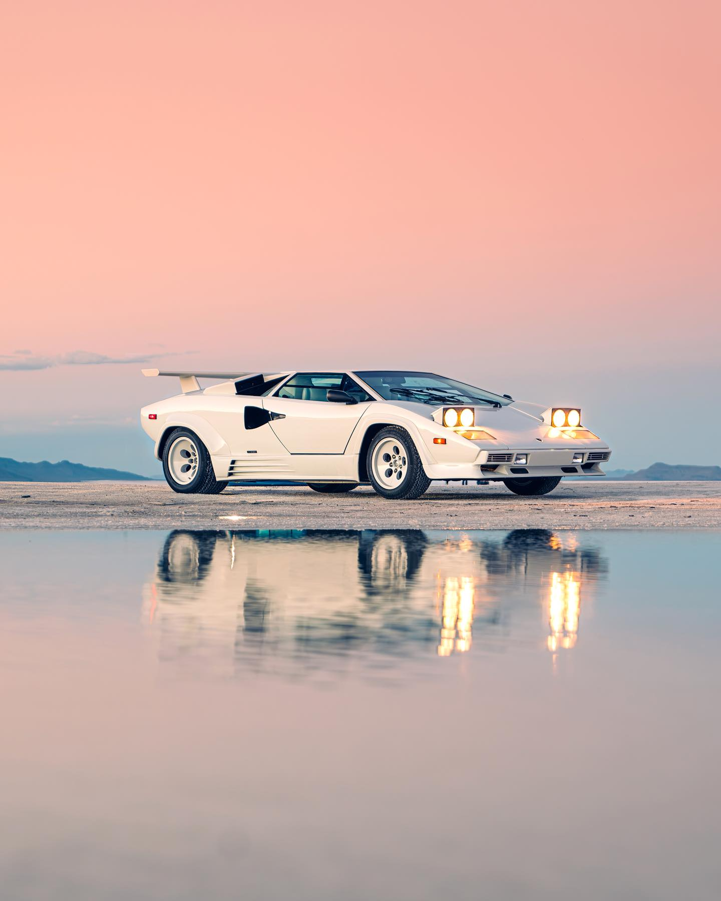
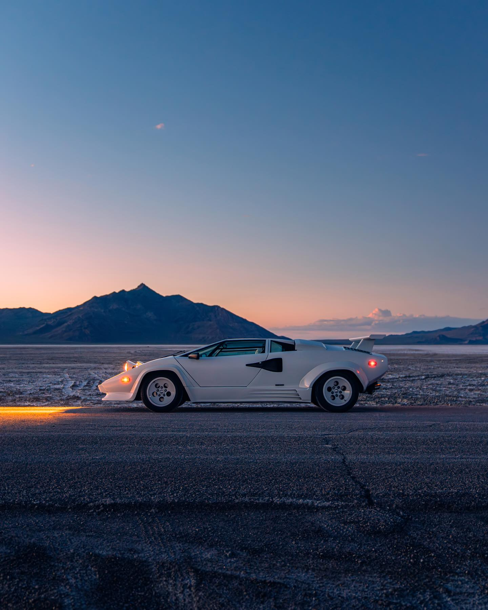
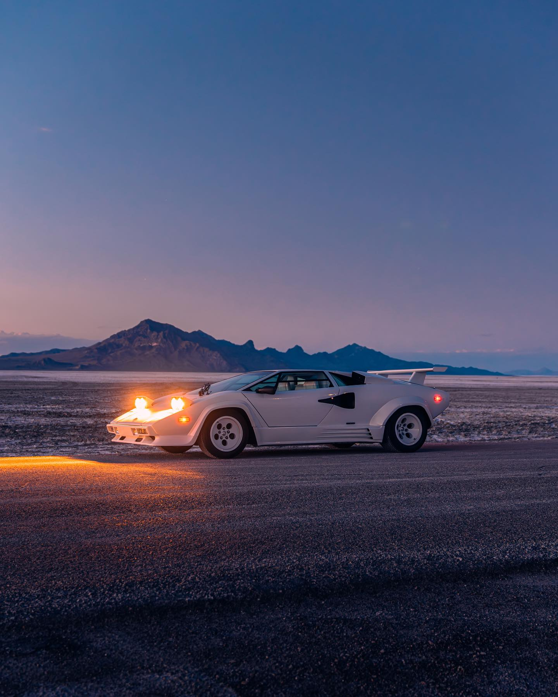
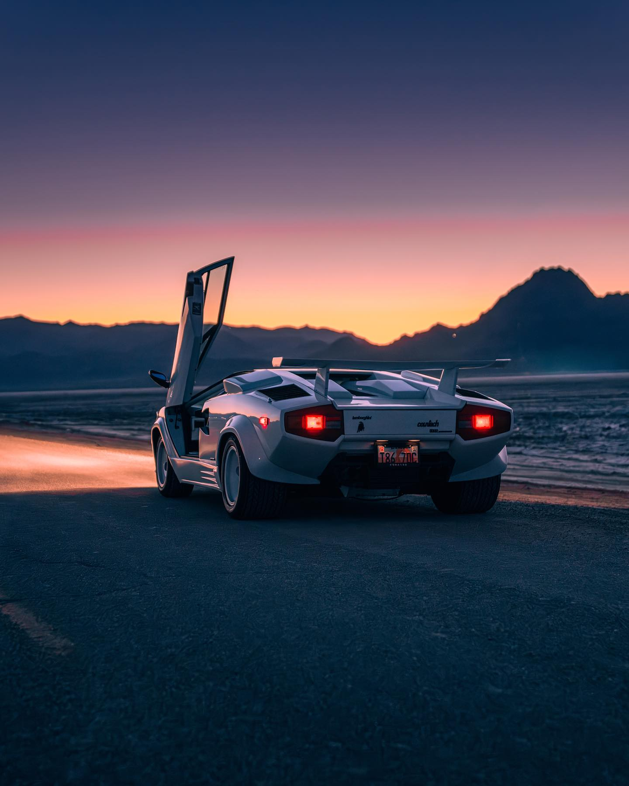

The Countach stunned the world with its wedge shape and scissor doors. It became a poster car for a generation and set a bold direction for Lamborghini design.
Full Specifications
| Model | Countach LP5000 Quattrovalvole |
|---|---|
| Engine | 5.2L DOHC V12, 4 valves per cylinder |
| Power Output | 455 hp @ 7,000 rpm |
| Torque | 500 Nm @ 5,200 rpm |
| Transmission | 5-speed manual |
| Drive Type | Rear-wheel drive (RWD) |
| Top Speed | 295 km/h (183 mph) |
| 0–100 km/h | 4.9 seconds |
| Chassis | Tubular space frame |
| Suspension | Independent, double wishbone |
| Brakes | 4-wheel disc brakes |
| Weight | 1,490 kg (3,285 lbs) |
| Production Years | 1974–1990 |
| Units Built | 1,983 (QV version only) |
Gallery



